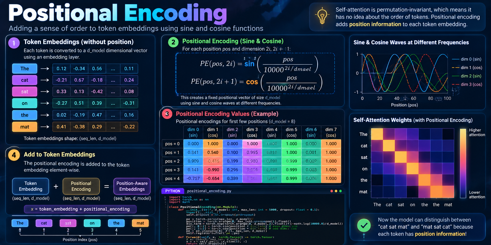
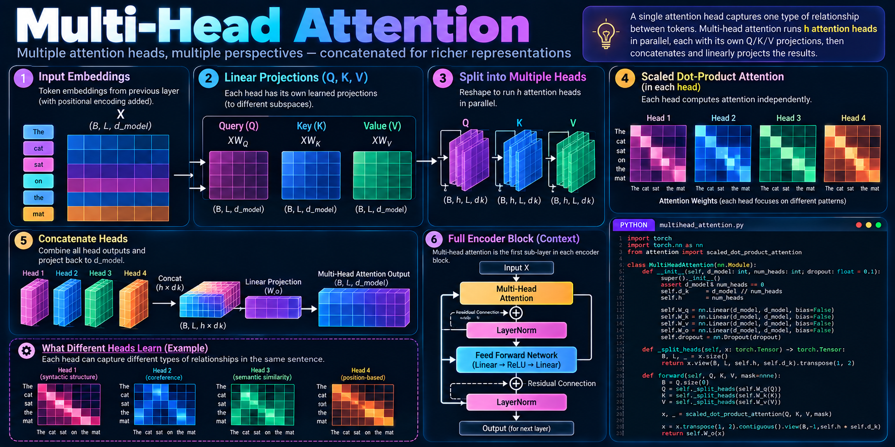
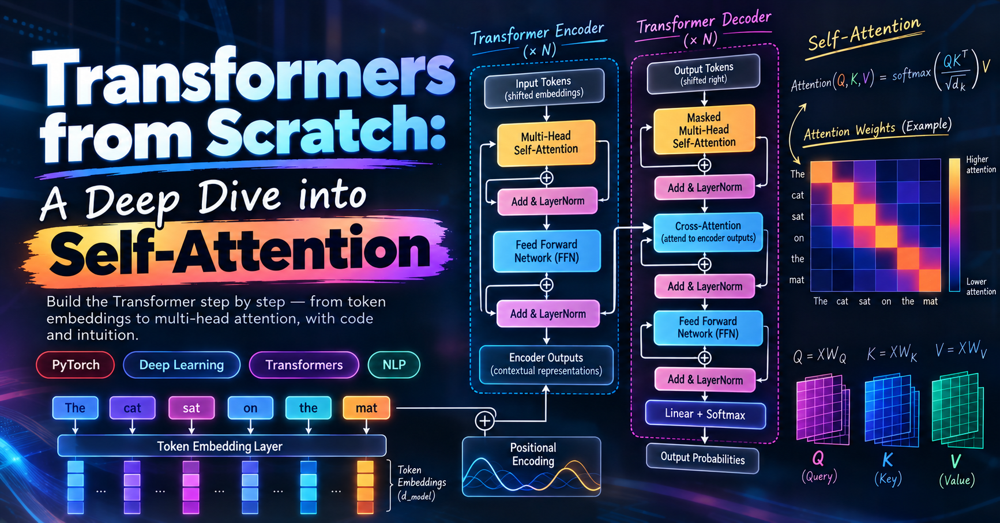

Why Transformers Changed Everything
Before 2017, sequence modelling in deep learning was dominated by RNNs and LSTMs. They worked — but they processed tokens one-by-one, making parallelisation impossible and making it extremely hard to learn long-range dependencies. The vanishing gradient problem meant that even with LSTMs, information from 200 tokens ago was largely forgotten.
Then Vaswani et al. published Attention Is All You Need and everything changed. The Transformer removed recurrence entirely and replaced it with a mechanism that attends to every token in parallel. It was faster, it scaled better, and it could model long-range dependencies without fighting gradients.
Today, every major AI system you interact with — GPT-4, Gemini, Claude, LLaMA — is a Transformer or a Transformer variant. Understanding the architecture from scratch is table stakes for any serious AI engineer.
Input: Tokens and Embeddings
A Transformer takes a sequence of tokens as input. Tokenisation converts raw text
into integer IDs — each word (or subword) maps to an index in a vocabulary.
For example, with BPE tokenisation, "unbelievable" might split into
["un", "believ", "able"] → [4721, 8823, 391].
Each token ID is then passed through an embedding layer
— a lookup table of learned vectors of size d_model (512 in the
original paper). This converts the discrete token IDs into continuous dense vectors
that the model can actually do maths with.
import torch
import torch.nn as nn
class TokenEmbedding(nn.Module):
def __init__(self, vocab_size: int, d_model: int):
super().__init__()
# Lookup table: vocab_size × d_model
self.embedding = nn.Embedding(vocab_size, d_model)
self.d_model = d_model
def forward(self, x: torch.Tensor) -> torch.Tensor:
# x: (batch, seq_len) — token IDs
# Scale by sqrt(d_model) as in the original paper
return self.embedding(x) * (self.d_model ** 0.5)
The sqrt(d_model) scaling keeps the embedding magnitude from being
swamped by the positional encoding we add next.
Positional Encoding
Self-attention is permutation-invariant by nature — it has no concept of which token came first. If you shuffled the words "cat sat mat" vs "mat sat cat," the raw attention scores would be identical. That's a problem.
The original paper adds a positional encoding to each embedding — a fixed vector that encodes the token's position in the sequence using sine and cosine functions at different frequencies:
PE(pos, 2i) = sin(pos / 100002i/d_model)
PE(pos, 2i+1) = cos(pos / 100002i/d_model)

import torch
import torch.nn as nn
import math
class PositionalEncoding(nn.Module):
def __init__(self, d_model: int, max_len: int = 5000, dropout: float = 0.1):
super().__init__()
self.dropout = nn.Dropout(p=dropout)
pe = torch.zeros(max_len, d_model)
position = torch.arange(0, max_len).unsqueeze(1).float()
div_term = torch.exp(
torch.arange(0, d_model, 2).float() * (-math.log(10000.0) / d_model)
)
pe[:, 0::2] = torch.sin(position * div_term) # even dims
pe[:, 1::2] = torch.cos(position * div_term) # odd dims
pe = pe.unsqueeze(0) # (1, max_len, d_model)
self.register_buffer("pe", pe)
def forward(self, x: torch.Tensor) -> torch.Tensor:
# x: (batch, seq_len, d_model)
x = x + self.pe[:, : x.size(1), :]
return self.dropout(x)Self-Attention: The Core Idea
Self-attention asks: for each token in the sequence, how much should I attend to every other token? To compute this, each token's embedding is projected into three separate vectors using learned weight matrices:
- Query (Q) — what this token is looking for
- Key (K) — what this token advertises about itself
- Value (V) — what this token will contribute if selected
The attention score between two tokens is the dot product of their Q and K vectors,
scaled by √d_k to prevent the softmax from saturating in high dimensions:
Attention(Q, K, V) = softmax( Q · Kᵀ / √d_k ) · V
import torch
import torch.nn.functional as F
import math
def scaled_dot_product_attention(
Q: torch.Tensor,
K: torch.Tensor,
V: torch.Tensor,
mask: torch.Tensor = None
) -> tuple[torch.Tensor, torch.Tensor]:
"""
Args:
Q, K, V: (batch, heads, seq_len, d_k)
mask: optional boolean mask — True positions are masked out
Returns:
output: (batch, heads, seq_len, d_k)
weights: (batch, heads, seq_len, seq_len) — for visualisation
"""
d_k = Q.size(-1)
scores = torch.matmul(Q, K.transpose(-2, -1)) / math.sqrt(d_k)
if mask is not None:
scores = scores.masked_fill(mask == 0, float("-inf"))
weights = F.softmax(scores, dim=-1)
output = torch.matmul(weights, V)
return output, weightsd_k, dot products
grow in magnitude, pushing softmax into regions with tiny gradients. Dividing by
√d_k keeps the variance stable regardless of embedding dimension.
Multi-Head Attention
A single attention head captures one type of relationship between tokens. In practice,
you want the model to attend to different aspects simultaneously — syntactic structure,
co-reference, semantic similarity. Multi-head attention runs
h attention heads in parallel, each with its own Q/K/V projections,
then concatenates and linearly projects the results:
import torch
import torch.nn as nn
from attention import scaled_dot_product_attention
class MultiHeadAttention(nn.Module):
def __init__(self, d_model: int, num_heads: int, dropout: float = 0.1):
super().__init__()
assert d_model % num_heads == 0
self.d_k = d_model // num_heads
self.h = num_heads
self.W_q = nn.Linear(d_model, d_model, bias=False)
self.W_k = nn.Linear(d_model, d_model, bias=False)
self.W_v = nn.Linear(d_model, d_model, bias=False)
self.W_o = nn.Linear(d_model, d_model, bias=False)
self.dropout = nn.Dropout(dropout)
def _split_heads(self, x: torch.Tensor) -> torch.Tensor:
# x: (B, L, d_model) → (B, h, L, d_k)
B, L, _ = x.size()
return x.view(B, L, self.h, self.d_k).transpose(1, 2)
def forward(self, Q, K, V, mask=None):
B = Q.size(0)
Q = self._split_heads(self.W_q(Q))
K = self._split_heads(self.W_k(K))
V = self._split_heads(self.W_v(V))
x, _ = scaled_dot_product_attention(Q, K, V, mask)
# Concat heads: (B, h, L, d_k) → (B, L, d_model)
x = x.transpose(1, 2).contiguous().view(B, -1, self.h * self.d_k)
return self.W_o(x)
The Encoder Stack
Each encoder layer wraps multi-head attention in a residual connection followed by layer normalisation, then applies a position-wise feed-forward network (two linear layers with a ReLU in between) — again with residual + LayerNorm:
import torch
import torch.nn as nn
from multihead_attention import MultiHeadAttention
class EncoderLayer(nn.Module):
def __init__(self, d_model: int, num_heads: int, d_ff: int, dropout: float = 0.1):
super().__init__()
self.self_attn = MultiHeadAttention(d_model, num_heads, dropout)
self.ff = nn.Sequential(
nn.Linear(d_model, d_ff),
nn.ReLU(),
nn.Dropout(dropout),
nn.Linear(d_ff, d_model),
)
self.norm1 = nn.LayerNorm(d_model)
self.norm2 = nn.LayerNorm(d_model)
self.dropout = nn.Dropout(dropout)
def forward(self, x: torch.Tensor, mask=None) -> torch.Tensor:
# Sub-layer 1: self-attention + residual + norm
attn_out = self.self_attn(x, x, x, mask)
x = self.norm1(x + self.dropout(attn_out))
# Sub-layer 2: feed-forward + residual + norm
ff_out = self.ff(x)
x = self.norm2(x + self.dropout(ff_out))
return x
Stack N=6 of these layers and you have the full Transformer encoder.
The original paper also has a decoder with cross-attention (attending to encoder outputs)
and a causal mask to prevent future-token leakage — but for tasks like classification,
encoding, or embedding generation, the encoder alone is sufficient.

Training Considerations
The original paper uses a custom schedule that linearly warms up to a peak LR for the first 4,000 steps, then decays proportionally to the inverse square root of the step count. Skipping warmup causes instability early in training.
Rather than targeting a hard 1.0 for the correct token, label smoothing (ε = 0.1) distributes a small probability mass across all vocab items. This regularises the model and prevents overconfident predictions.
Applied after every sub-layer output (before the residual add) and on attention weights. The original paper uses p=0.1. Reducing this helps on smaller datasets; increasing it helps with very deep stacks.
Key Takeaways
- Transformers replace sequential RNN computation with parallelised self-attention — this is why they scale.
- Positional encoding injects order information that attention alone cannot capture.
- Multi-head attention lets the model attend to different relationship types simultaneously.
- Residual connections + LayerNorm are essential for training deep stacks stably.
- The same building blocks power BERT, GPT, T5, and every major LLM today — understanding them from scratch means you can read and implement research papers directly.